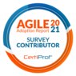
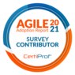

Perfil de Carreira
I´m a dedicated software development professional with over 13 years of experience in the field. I hold a Bachelor's degree in Information Systems from Estácio de Sá University in São Paulo, Brazil, and a specialization in Information Technology Management from Anhembi Morumbi University, also in São Paulo. My career is marked by a deep commitment to innovation and excellence in technology.
Experience Summary
I have extensive experience in various areas of software development. I specialize in Web RESTful development, code debugging and optimization, and requirements analysis and gathering. I use agile methodologies such as Scrum and Lean for demand management.
I have knowledge in Microservices, development with C# using ASP.Net Core and .Net 6, and FrontEnd development with Angular. My database experience includes Sql Server, PostgreSQL, Oracle (Pl/Sql), MySQL, DynamoDB, and DocumentDB (MongoDB).
I am familiar with DevOps tools and services such as Microsoft Azure DevOps and Amazon Web Services (AWS), as well as using Jira and Confluence for project management. I also work with Docker containers, AmazonMQ (RabbitMQ), and Kibana (Amazon OpenSearch Service).
I follow Clean Code and Domain-Driven Design (DDD) practices and develop unit tests with xUnit for .Net Core. I perform testing with Postman collections and have experience integrating with banks like SIBS in Portugal and Santander in Spain.
I have skills in HTML5, JavaScript, and source code versioning with GIT and Azure DevOps, including branching and merging. I am certified in various areas, including Objectives and Key Results (OKR), Management 3.0, Professional Agile Leadership (PAL I®), Professional Scrum Master (PSM I®), Professional Scrum Product Owner (PSPO I®), Kanban Foundation (KIKF®), Kanban Essentials Professional (KEPC®), and Scrum Foundation Professional (SFPC®).
Experiences
NPF Project
NPF is a software development company based in Portugal with advanced consultancy skills focused on providing better solutions to the Travel Industry. NPF is a member of Travelport Developer Network. Consulting focused on the travel industry. Project with the objective of creating integrations with the GDS of the main airlines, integrations with partners such as Flixbus, among others. Through the tools developed, partner customers can search for timetables, price quotes and even reserve tickets.
- Requirements analysis and gathering: Identify and document client needs to ensure projects meet their objectives.
- Demand management using Scrum/Lean: Employ Scrum and Lean methodologies to efficiently manage demands, fostering collaboration and continuous value delivery.
- C# development with .Net 4.8, .Net Core, and .Net 6: Program in C# across various .Net versions to create robust and modern applications.
- SOAP and RESTful integration: Perform system integration using SOAP and RESTful web services to facilitate communication across platforms.
- FrontEnd development with Angular: Develop dynamic and interactive user interfaces using Angular, ensuring an excellent experience for end users.
- ORM: Utilize object-relational mapping (ORM) to interact with databases efficiently and systematically.
- SQL Server and MongoDB: Work with SQL Server and MongoDB to store and manage data efficiently.
- Microsoft Azure DevOps: Use Azure DevOps to plan, develop, test, and deliver software with agility and quality.
- Agile Methodology: Follow agile principles to adapt quickly to changes and continually improve processes and products.
- CleanCode and DDD: Implement clean code practices and domain-driven design (DDD) to write clear, readable, and maintainable code.
- Postman collections for testing: Create Postman collections to efficiently test APIs and ensure they function as expected.
- HTML5 and JavaScript: Develop websites and web applications using HTML5 and JavaScript, creating interactive and responsive solutions.
- Git: Use Git for version control, facilitating collaboration and managing changes in source code.
Galp Energy Project
Galp is a group of Portuguese companies in the energy sector. Project with the objective of creating a payment gateway integrating all applications in the GALP world, this payment gateway had SIBS from Portugal and Santander from Spain as banking partners. A project developed .net, with cloud infrastructure using AWS.
- Analysis and requirements gathering: Identify and document client needs to ensure projects meet their objectives.
- Management of demands using Scrum/Lean: Organize and manage demands efficiently, promoting collaboration and continuous value delivery.
- .Net Core: Develop robust applications using the .NET Core platform.
- Microservices: Architect and develop systems using the microservices approach for scalability and modularity.
- C# development with ASP.Net Core and .Net 6: Program in C# using ASP.NET Core and the latest versions of .NET to create modern and efficient solutions.
- PostgreSQL and DocumentDB (MongoDB): Use relational databases like PostgreSQL and non-relational ones like MongoDB for efficient data storage and management.
- Microsoft Azure DevOps: Utilize Azure DevOps for planning, developing, testing, and delivering software with greater agility and quality.
- Jira/Confluence: Collaborate and document projects using Jira and Confluence for efficient project management.
- Amazon Web Services (AWS): Implement solutions on AWS for scalability and cloud infrastructure management.
- Agile Methodology: Apply agile principles to quickly adapt to changes and continuously improve processes.
- Containers (Docker): Use Docker to package, distribute, and run applications efficiently and isolated.
- AmazonMQ (RabbitMQ): Implement asynchronous messaging using RabbitMQ on AmazonMQ for communication between distributed components.
- Kibana (Amazon OpenSearch Service): Configure and use Kibana for data analysis and visualization, facilitating monitoring and data-driven decision-making.
- CleanCode and DDD: Adopt clean code practices and domain-driven design (DDD) to develop high-quality software that is easy to maintain.
- Unit testing with xUnit for .NET Core: Write unit tests using xUnit to ensure the quality and reliability of code developed in .NET Core.
- Development of collections for testing via Postman: Create collections in Postman to efficiently test APIs and ensure their proper functioning.
- Integration with SIBS bank in Portugal: Develop and integrate systems with the SIBS bank in Portugal to facilitate financial transactions and banking operations.
- Integration with Santander bank in Spain: Implement integrations with Santander bank in Spain to support banking and financial operations.
- HTML5 and JavaScript: Develop web applications using HTML5 and JavaScript to create dynamic and interactive interfaces.
- Git: Use Git for version control of code, facilitating collaboration and change management.
The Salta Group is one of the largest groups of private schools in Brazil, the project aimed to improve the company's payment software, providing users with a good experience when re-enrolling, negotiating debts and paying invoices. My main objective was to manage the team well and assist in the daily development of tasks, always helping with agile and transparent management. A project developed .net, with cloud infrastructure using AWS.
- Agile team management: Lead and manage agile teams, ensuring efficient collaboration and achieving project goals.
- CodeReview: Conduct code reviews to ensure code quality, adherence to coding standards, and knowledge sharing among team members.
- Analysis and requirements gathering: Identify and document client requirements to ensure projects meet their objectives.
- Management of demands using Scrum/Lean: Organize and manage demands efficiently, using Scrum and Lean methodologies to promote collaboration and continuous improvement.
- .Net Core: Develop robust applications using the .NET Core framework.
- Microservices: Design and implement microservices architectures for scalable and modular systems.
- C# development with ASP.Net Core and .Net 6: Develop applications using C# with ASP.NET Core and .NET 6, ensuring modern and efficient solutions.
- PostgreSQL and SQL Server: Utilize PostgreSQL and SQL Server for efficient data storage and management in relational database environments.
- Microsoft Azure DevOps: Use Azure DevOps for end-to-end software development and delivery, including planning, coding, testing, and deployment.
- Bitbucket: Utilize Bitbucket for version control and collaboration in software development projects.
- Jira/Trello/CODA: Manage projects and tasks using tools like Jira, Trello, or CODA for efficient project management and team collaboration.
- Amazon Web Services (AWS): Implement solutions on AWS for cloud infrastructure management and scalability.
- Agile Methodology: Apply agile principles to adapt quickly to changes and continuously improve project processes and outcomes.
- Containers (Docker): Use Docker containers for packaging and deploying applications in isolated and reproducible environments.
- Git: Utilize Git for version control, enabling efficient collaboration and code management.
Development of tools and team management to provide banking integration between the institution and banking partners. The main objective was to ensure that all banking transactions between the institution and its partners were completed at both ends. In order to have good management, reconciliation data was displayed on portals developed by the team.
- Analysis and Requirements Gathering: Identify and document client needs to ensure projects meet their objectives.
- Management of Demands using Scrum/Lean: Utilize agile methodologies like Scrum and Lean to manage and organize demands efficiently, fostering collaboration and continuous value delivery.
- .Net Core: Develop robust applications using the .NET Core framework.
- Microservices: Design and implement microservices architectures for scalable and modular systems.
- C# Development with ASP.Net Core and .Net 6: Program in C# using ASP.NET Core and the latest versions of .NET to create modern and efficient solutions.
- DynamoDB (NoSQL), PostgreSQL, MySQL and SQL Server: Work with various database management systems including DynamoDB (NoSQL), PostgreSQL, MySQL, and SQL Server for efficient data storage and management.
- Microsoft Azure DevOps: Use Microsoft Azure DevOps for planning, developing, testing, and delivering software with agility and quality.
- Jira/Trello: Manage projects and tasks using tools like Jira and Trello for efficient project management and collaborative teamwork.
- Amazon Web Services (AWS): Implement solutions on AWS for cloud infrastructure management and scalability.
- Agile Methodology: Apply agile principles to adapt quickly to changes and continuously improve project processes and outcomes.
- Containers (Docker): Use Docker containers to package and deploy applications efficiently and at scale.
- Git: Utilize Git for version control, enabling collaboration and efficient management of software development changes.
- Requirements Analysis and Gathering
- Management of demands using Scrum/Lean
- C# Development with ASP.Net Core
- Microservices
- Amazon Webservices AWS
- Database Development and Maintenance
- Development and Maintenance in legacy applications (ASP and VB)
- Git
- Jira/Trello
- Microsoft Azure DevOps (CI/CD)
- Containers(Docker)
Consulting for clients from different areas of activity.
.NET development, integrations with legacy software and APIs, maintenance and development of relational and non-relational databases and team management contributing to various value deliveries.
- Development and Maintenance in ERP Gemco AnyWhere, ERP with Store Front modules (POS), Tax, Logistics, Entries and Outputs
- Visual Basic 6 Programming Language, Sql Database Server and Oracle.
- C# Development with ASP.Net Core
- Agile SCRUM Methodology
- TFS(Team Foundation Server) and GIT version control tools
Development and improvement of Bematech products with an emphasis on retail.
VB6 and .Net development for various value deliveries.
- Carrying out studies with process users in order to find the best rational path so that information can be taken to system users.
- Development of company management ERP functionalities.
- Crystal reports 8.0.
- MS Sql Server.
- Carrying out analysis with the company's users in order to find the best rational way for the information to be taken to the users of the systems
- Development of enterprise management ERP functionalities developed in visual basic 6 with Sql Server database, generating reports with crystal reports
Analysis and development in VB6 and .NET applications, report generation with crystal reports, maintenance and development in SQL SERVER database.
Projects
Some projects I participated in:
Skills


 
